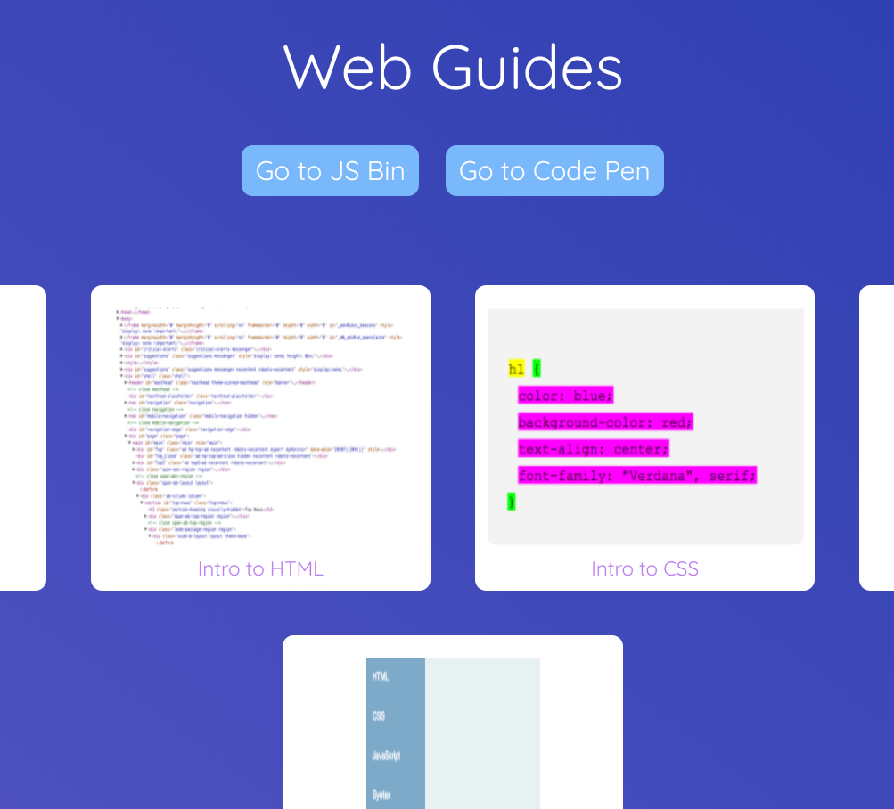

In this project, we're going to code our website from scratch using HTML, CSS, and Javascript. Here's an example project:

1) To get started, read through the documentation on coding.space/web
2) Select the Portfolio project. Using, Repl.it or Code Pen create a page describing your code for change project.
You need to include the following information:
-What UN Sustainable Development Goal you chose
-4 or 5 facts about the problem in the world or your community
-What your idea is
-How your idea will help change this problem
-What the next steps are for your project
-A button with a link to your Scratch or WoofJS game (if you did level 1)
-What UN Sustainable Development Goal you chose
-4 or 5 facts about the problem in the world or your community
-What your idea is
-How your idea will help change this problem
-What the next steps are for your project
-A button with a link to your Scratch or WoofJS game (if you did level 1)
3) Optional Challenge: Add a quiz to your page. Use the SpaceFeed project to learn how.